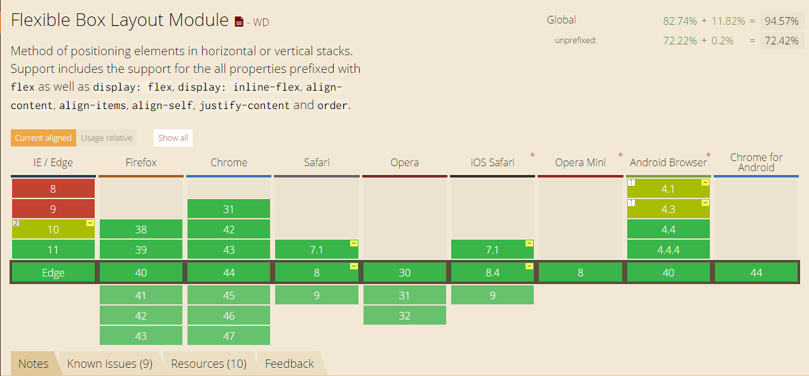

flex布局的兼容性如图所示，另：微信内置浏览器和手机uc浏览器似乎不兼容~
*以下内容主要参考了阮一峰大神的:《Flex 布局教程：语法篇》
任何一个容器都可以指定为flex布局包括行内元素，设置为flex布局后，子元素的float，clear，vertical-align以及width在某些情况下将失效。

容器默认存在两根轴：水平的主轴（main axis）和垂直的交叉轴（crossaxis）。主轴的开始位置（与边框的交叉点）叫做mainstart，结束位置叫做mainend；交叉轴的开始位置叫做cross start，结束位置叫做crossend。项目默认沿主轴排列。单个项目占据的主轴空间叫做main size，占据的交叉轴空间叫做cross size。轴跟容器align-content属性有关
-
- flex-direction: row | row-reverse | column | column-reverse;
- 决定主轴的方向（即项目的排列方向）。
-
- flex-wrap: nowrap | wrap | wrap-reverse;
- 定义，如果一条轴线排不下，如何换行。
-
- flex-flow: row nowrap
- 为flex-direction和flex-wrap的缩写
-
- justify-content: flex-start | flex-end | center | space-between | space-around;
- 定义了项目在主轴上的对齐方式。
-
- align-items: flex-start | flex-end | center | baseline | stretch;
- 定义项目在交叉轴上如何对齐。
-
- align-content: flex-start | flex-end | center | space-between | space-around | stretch;
- 定义了多根轴线的对齐方式。如果项目只有一根轴线，该属性不起作用。
容器有以下六个属性
-
- order: 0
- 定义项目的排列顺序。数值越小，排列越靠前，默认为0。
-
- flex-grow: 0
- 定义项目的放大比例，默认为0，即如果存在剩余空间，也不放大。
-
- flex-shrink: 1
- 定义了项目的缩小比例，默认为1，即如果空间不足，该项目将缩小。
-
- flex-basis:auto | length
- 定义了在分配多余空间之前，项目占据的主轴空间（main size）。浏览器根据这个属性，计算主轴是否有多余空间。它的默认值为auto，即项目的本来大小。
-
- flex:0 1 auto
- 为flex-grow,flex-shrink和flex-basis的简写
-
- align-self: auto| flex-start | flex-end | center | baseline | stretch;
- 允许单个项目有与其他项目不一样的对齐方式，可覆盖align-items属性。默认值为auto，表示继承父元素的alignitems属性，如果没有父元素，则等同于stretch。
项目有以下六个属性